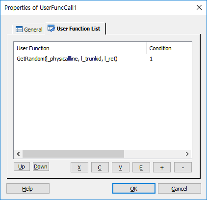
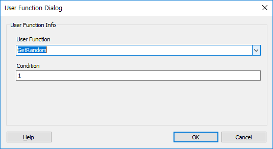

DefineDll 에 등록한 사용자 함수를 호출 하여 그 기능을 수행 합니다.
사용자 함수는 리턴 값을 받을 수 없으므로 함수를 만들때 Reference 인자를 넘겨서 값을 받을 수 있도록 만들어야 합니다.
♣ 호출한 함수가 사용자 정의 동적 라이브러리에 없으면, 내부 함수 리스트에서 찾아보고 내부 함수 리스트에 있으면 내부 함수 리스트의 함수를 호출 합니다. 이 때의 모든 규칙은 내부 함수 호출 규칙을 따릅니다.
ICON
PROPERTIES
 User Function List
User Function List

List Box : 여러개의 사용자 함수를 지정 할 수 있습니다.
Up Button : 선택한 사용자 함수를 위로 이동 합니다.
Down Button : 선택한 사용자 함수를 아래로 이동 합니다.
X Button : 선택한 리스트를 잘라냅니다.(Ctrl+X)
C Button : 선택한 리스트의 내용을 복사 합니다.(Ctrl+C)
V Button : 복사한 리스트의 내용을 붙여넣기 합니다.(Ctrl+V)
E Button : 선택한 사용자 함수를 수정 합니다.
+ Button : 사용자 함수를 추가 합니다.
- Button : 선택한 사용자 함수를 삭제 합니다.

User Function : 사용자 함수를 지정 합니다.
Condition : 사용자 함수 수행 조건을 지정 합니다.
RESULT
None.
RELATED